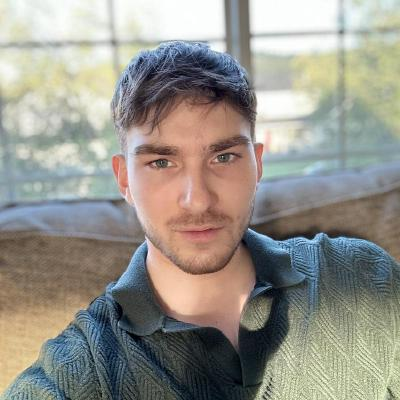

William Reese
Welcome to my landing page! Here's a little about me. I'm currently going to university at Eastern Washington University, where I am completing a BS in Computer Science. I am planned to graduate March 2025. I started my first internship November of 2023 at Schweitzer Engineering Laboratories, where I've been working ever since. September 2024 I was promoted from my role as an Intern to an Associate Software Engineer Position. Some of my favorite hobbies include: Playing guitar, rock climbing, weight lifting, travelling, and hiking.